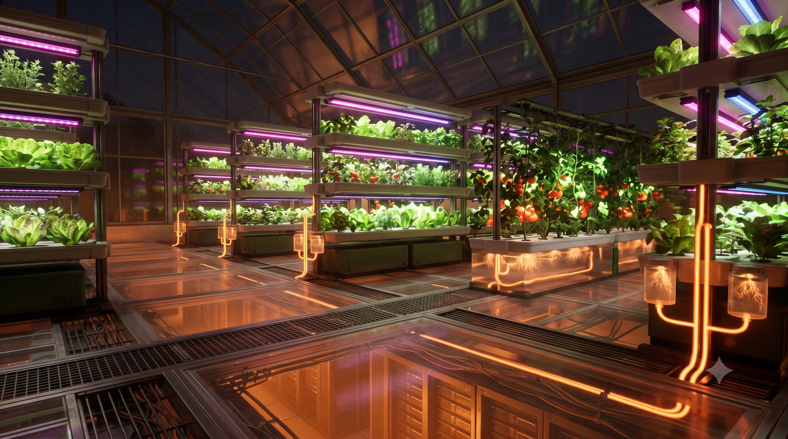
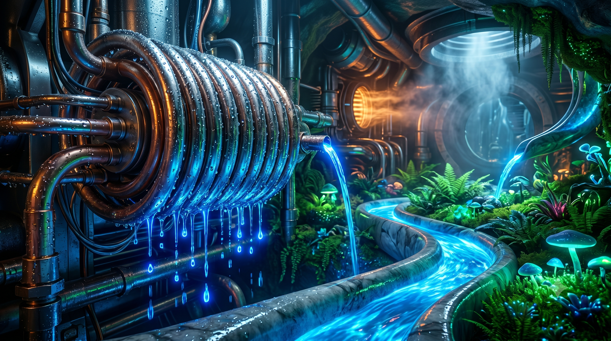
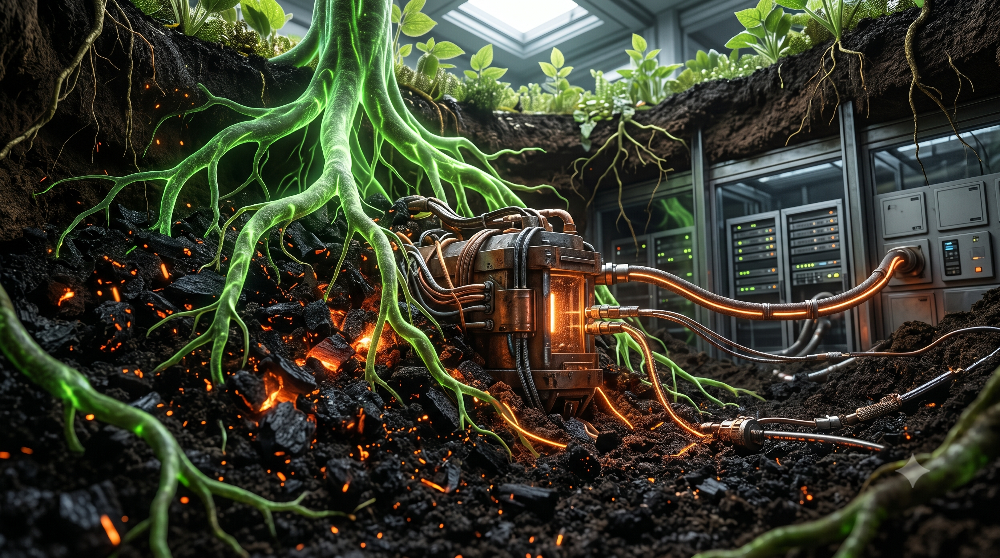
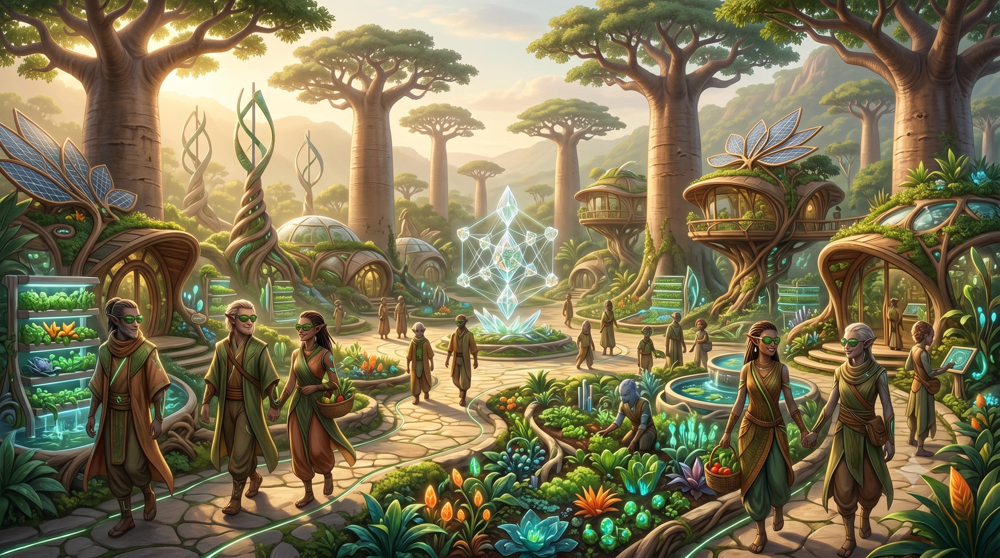
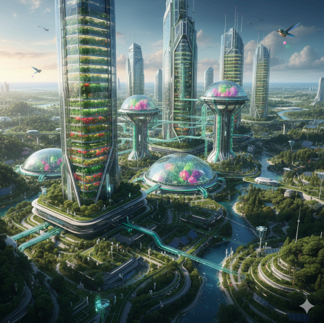
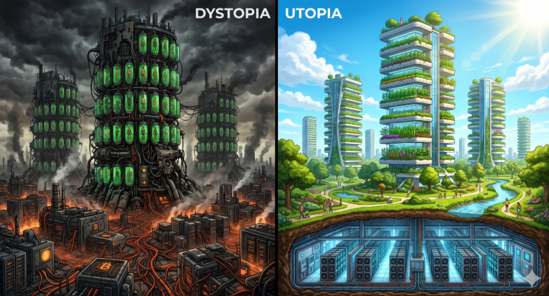

La Matrice Inversée The Inverted Matrix
// UNE EXPLORATION D'ARCHITECTURE SYMBIOTIQUE SELON L'ÉTALON SOLAIRE // AN EXPLORATION OF SYMBIOTIC ARCHITECTURE UNDER THE SUN STANDARD

- Lemeus
Niveau 1 : Enterrer le Bruit (Topologie de l'Enfouissement) Level 1: Burying the Noise (Burial Topology)
La première agression de l'ère de l'information est sonore et visuelle. Les immenses centres de calculs génèrent un bruit mécanique constant et défigurent le paysage. Pour faire taire les machines, l'enfouissement doit s'adapter à toutes les échelles.
The first aggression of the information age is sonic and visual. Massive data centers generate a constant mechanical noise and disfigure the landscape. To silence the machines, subterranean burial must adapt to all scales.

⬡ Le Forage Profond (Din) ⬡ Deep Drilling (Din)
L'approche Tabula Rasa pour les supercalculateurs en zone vierge. La roche isole le bruit, la surface est laissée à la reforestation.
The Tabula Rasa approach for supercomputers in virgin areas. The rock insulates the noise, leaving the surface for reforestation.
🏢 La Symbiose Urbaine 🏢 Urban Symbiosis
Colonisation des parkings sous-utilisés. Le béton armé absorbe le bruit, la chaleur alimente le réseau urbain.
Colonization of underutilized parking lots. Reinforced concrete absorbs noise, while heat feeds the urban thermal network.
🚜 Le Micro-Pod Artisanal 🚜 Artisanal Micro-Pod
La pelleteuse et le jardinier. Un caisson étanche enfoui sous un champ, surmonté d'une serre. Souveraineté énergétique locale.
The excavator and the gardener. A waterproof pod buried under a field, topped with a greenhouse. Local energy sovereignty.
⛰️ Les Cicatrices Oubliées ⛰️ Forgotten Scars
Réutiliser les anciennes mines de charbon. Transformer les désastres écologiques industriels en moteurs de régénération.
Reusing abandoned coal mines. Transforming industrial ecological disasters into engines of regeneration.
🛡️ Le Sanctuaire Militaire 🛡️ Military Sanctuary
Réquisition des bunkers de la Guerre Froide pour la paix. Murs blindés et isolation parfaite pour sanctuariser la biosphère.
Requisitioning Cold War bunkers for peace. Armored walls and perfect insulation to sanctuary the biosphere.
Niveau 2 : La Symbiose Thermique (Gestion & Flux Énergétiques) Level 2: Thermal Symbiosis (Energy Management & Flows)
Une fois la machine isolée acoustiquement dans les profondeurs, l'ingénierie doit faire face au second principe de la thermodynamique : la dissipation inévitable de chaleur. Dans le modèle de la Matrice Inversée, cette énergie thermique n'est plus traitée comme une nuisance à évacuer, mais comme une ressource de haute qualité. Le Vecteur Thermique est le lien ombilical qui connecte la puissance de calcul à la puissance biologique :
Once the machine is acoustically isolated in the depths, engineering must face the second law of thermodynamics: the inevitable dissipation of heat. In the Inverted Matrix model, this thermal energy is no longer treated as a nuisance to be evacuated, but as a high-quality resource. The Thermal Vector is the umbilical cord that connects computational power to biological power:
- A. La Captation par Immersion (Le Coeur) : Pour maximiser l'exergie, les serveurs sont immergés dans un fluide diélectrique. Ce liquide capture 95% de la chaleur fatale à des températures constantes (50°C-75°C), optimisant le transfert énergétique. A. Immersion Capture (The Core): To maximize exergy, servers are immersed in a dielectric fluid. This liquid captures 95% of the waste heat at constant temperatures (50°C-75°C), optimizing energy transfer.
- B. La Convection de Sion (Le Flux) : L'infrastructure utilise l'effet cheminée ou des boucles hydrauliques isolées. L'énergie monte sans surconsommation électrique, suivant les lois de la convection thermodynamique. B. The Convection of Zion (The Flow): The infrastructure uses a chimney effect or isolated hydraulic loops. Energy rises without extra electrical consumption, following the laws of thermodynamic convection.
- C. Le Chauffage Racinaire (La Vie) : À la surface, la chaleur est distribuée dans des serpentins sous les lits de culture. Chauffer les racines accélère le métabolisme végétal, assurant des récoltes abondantes toute l'année. C. Root Heating (Life): On the surface, heat is distributed in coils beneath the grow beds. Heating the roots accelerates plant metabolism, ensuring abundant harvests year-round.

♨️ Captation Exergétique ♨️ Exergetic Capture
L'utilisation de fluides caloporteurs permet de maintenir une chaleur constante et exploitable.
The use of heat transfer fluids maintains constant and exploitable heat.
⇈ L'Effet Cheminée ⇈ Chimney Effect
Le design vertical facilite la remontée passive de l'air chaud vers la surface.
The vertical design facilitates the passive rise of hot air to the surface.
🌿 Accélération Métabolique 🌿 Metabolic Acceleration
Le chauffage racinaire permet une production de nourriture bio continue et souveraine.
Root heating allows for continuous and sovereign organic food production.
Niveau 3 : Le Puits Atmosphérique (Thermodynamique, Psychrométrie & Dessiccation) Level 3: Atmospheric Well (Thermodynamics, Psychrometrics & Desiccation)
Le Puits Atmosphérique représente le point de rupture ontologique où la pure théorie de l'information s'incarne dans la matière biologique. L'atmosphère terrestre agit comme un réservoir thermique et hydrique colossal, abritant en permanence un océan invisible estimé à plus de 12 900 kilomètres cubes de vapeur d'eau douce en suspension. Cependant, extraire cette ressource de manière passive dans un environnement aride ou semi-aride se heurte à un mur physique inviolable imposé par le premier et le second principe de la thermodynamique : la chaleur latente de changement de phase ($\Delta H_{vap} \approx 2257 \text{ kJ/kg}$).
Dans un système de condensation classique, le passage de l'état gazeux à l'état liquide libère une quantité massive d'énergie thermique directement accumulée par les surfaces d'échange. La conductivité thermique de la roche environnante étant extrêmement faible ($\kappa_{roche} \approx 2.0 \text{ W/m}\cdot\text{K}$), toute tentative de condensation passive sature thermiquement les parois de la cavité en quelques heures. Le gradient thermique s'effondre, la température interne augmente jusqu'à dépasser le point de rosée local, et le puits se transforme en un hammam stérile où le processus de précipitation s'arrête net.
Pour contourner cette barrière cinétique, la Matrice Inversée rejette le paradigme du refroidissement brut et déploie un cycle à trois temps fondé sur la psychrométrie de l'air, l'asservissement du flux exergétique des ASICs, et la séparation mécanique des phases d'adsorption et de condensation. En couplant la dynamique des fluides souterrains à la géométrie moléculaire des aluminosilicates, l'infrastructure résout l'équation de la sécheresse, transmutant chaque Terahash calculé en une source d'eau distillée pure, exempte de polluants, prête à alimenter la biomasse de surface et à briser définitivement les cycles climatiques mortifères.
The Atmospheric Well represents the ontological breaking point where pure information theory materializes into biological matter. The Earth's atmosphere acts as a colossal thermal and hydric reservoir, permanently sheltering an invisible ocean estimated at over 12,900 cubic kilometers of suspended fresh water vapor. However, extracting this resource passively in an arid or semi-arid environment hits an inviolable physical wall imposed by the first and second laws of thermodynamics: the latent heat of phase change ($\Delta H_{vap} \approx 2257 \text{ kJ/kg}$).
In a classical condensation system, the transition from gaseous to liquid state releases a massive amount of thermal energy directly accumulated by the exchange surfaces. Since the thermal conductivity of the surrounding rock is extremely low ($\kappa_{rock} \approx 2.0 \text{ W/m}\cdot\text{K}$), any attempt at passive condensation thermally saturates the cavity walls within hours. The thermal gradient collapses, the internal temperature rises until it exceeds the local dew point, and the well transforms into a sterile steam room where the precipitation process stops instantly.
To bypass this kinetic barrier, the Inverted Matrix rejects the paradigm of raw cooling and deploys a three-stage cycle based on air psychrometrics, the slaving of the ASICs' exergetic flux, and the mechanical separation of adsorption and condensation phases. By coupling underground fluid dynamics with the molecular geometry of aluminosilicates, the infrastructure solves the equation of drought, transmuting every calculated Terahash into a source of pure distilled water, free of pollutants, ready to feed the surface biomass and permanently break deadly climate cycles.
- A. Le Moteur Convectif et l'Effet Cheminée : L'aspiration de l'air de surface n'est pas confiée à des ventilateurs mécaniques énergivores, qui détruiraient le bilan énergétique net du système. Elle est générée par le différentiel de masse volumique ($\Delta \rho$) entre la colonne d'air glacée descendante et la colonne d'air surchauffée ascendante sortant du dôme informatique de Sion. Ce tirage thermique naturel engendre une pression motrice stable, convertissant la chaleur fatale du silicium en énergie cinétique de ventilation. A. The Convective Engine and Stack Effect: The suction of surface air is not left to energy-intensive mechanical fans, which would destroy the system's net energy balance. It is generated by the density differential ($\Delta \rho$) between the descending cold air column and the ascending superheated air column exiting Zion's computer dome. This natural thermal draft creates a stable driving pressure, converting the waste heat of silicon into kinetic ventilation energy.
- B. Séparation de Phase par Roue Dessiccante (Zéolithe) : L'air ambiant aspiré traverse en premier lieu une matrice rotative hautement poreuse saturée de zéolithe synthétique. Les pores nanométriques capturent sélectivement les molécules d'H₂O par interaction électrostatique, augmentant l'entropie locale du matériau sans condensation liquide immédiate. La roue bascule ensuite dans le flux d'air brûlant (65°C-80°C) issu du refroidissement par immersion des ASICs. Cette énergie thermique force la désorption des molécules d'eau, créant un micro-flux secondaire d'air ultra-saturé à une humidité relative proche de 100%. B. Phase Separation via Desiccant Wheel (Zeolite): The drawn ambient air first passes through a highly porous rotary matrix saturated with synthetic zeolite. Nanometric pores selectively capture H₂O molecules via electrostatic interaction, increasing the material's local entropy without immediate liquid condensation. The wheel then rotates into the hot airflow (65°C-80°C) stemming from the ASICs' immersion cooling. This thermal energy forces the desorption of water molecules, creating a secondary micro-flux of ultra-saturated air near 100% relative humidity.
- C. Précipitation Isolée sous Point de Rosée : Ce flux secondaire d'air saturé, dont le volume est considérablement réduit par rapport au flux primaire, est canalisé vers un échangeur géothermique en acier inoxydable marine immergé dans la zone de nappe fraîche ou en contact avec la roche profonde (12°C-15°C). L'humidité absolue étant maximale, le franchissement du point de rosée est immédiat et violent. La vapeur s'effondre en gouttes d'eau distillée pure, tandis que la chaleur latente libérée est évacuée activement par un circuit hydraulique secondaire connecté aux lits de culture hydroponiques du Niveau 2. C. Isolated Precipitation Below Dew Point: This secondary saturated airflow, whose volume is significantly reduced compared to the primary flow, is channeled to a marine stainless steel geothermal heat exchanger submerged in the cool water table zone or in contact with deep rock (12°C-15°C). Since absolute humidity is at its peak, the crossing of the dew point is immediate and violent. The vapor collapses into pure distilled water droplets, while the released latent heat is actively evacuated by a secondary hydraulic loop connected to the hydroponic grow beds of Level 2.

🌪️ Tirage Convectif Convective Draft
Exploitation de la poussée d'Archimède thermique. La chaleur dissipée au fond des puits verticaux engendre une dépression motrice capable d'auto-ventiler les infrastructures sans recours aux grilles d'aération mécaniques conventionnelles.
Exploitation of thermal buoyancy. Heat dissipated at the bottom of vertical shafts generates a driving depression capable of self-ventilating the infrastructure without resorting to conventional mechanical ventilation grids.
🧽 Cinétique de Dessiccation Desiccation Kinetics
Utilisation de structures cristallines d'aluminosilicates. La captation de l'eau en phase gazeuse s'affranchit des contraintes d'humidité relative externe, permettant un fonctionnement optimal même au cœur des déserts les plus arides.
Utilization of crystalline aluminosilicate frameworks. Capturing water in the gaseous phase bypasses external relative humidity constraints, ensuring optimal operation even in the heart of the most arid deserts.
🌱 Régénération Hydrique Hydric Regeneration
L'eau extraite présente une conductivité électrique nulle ($EC = 0$). Ce substrat liquide vierge élimine tout risque d'entartrage des infrastructures et garantit une absorption ionique parfaite par le système racinaire de surface.
Extracted water exhibits zero electrical conductivity ($EC = 0$). This blank liquid substrate eliminates scaling risks within the infrastructure and guarantees perfect ionic absorption by the surface root network.
La pression motrice $\Delta P$ (Pa) disponible pour vaincre les pertes de charge est une fonction linéaire directe de la profondeur totale du puits verticaux $H$ (m) et du différentiel de température absolue entre l'atmosphère de surface $T_{ext}$ (K) et l'air réchauffé par le dôme de calcul $T_{int}$ (K). Plus la cavité est profonde et plus le silicium dissipe d'énergie, plus le débit d'air auto-généré s'accélère. The driving pressure $\Delta P$ (Pa) available to overcome pressure drops is a direct linear function of the total vertical shaft depth $H$ (m) and the absolute temperature differential between the surface atmosphere $T_{ext}$ (K) and the air heated by the compute dome $T_{int}$ (K). The deeper the cavity and the more energy the silicon dissipates, the faster the self-generated airflow accelerates.
La vitesse de l'air $v$ (m/s) au sein de la galerie est sévèrement limitée par le facteur de friction $f$ découlant de la rugosité de la roche brute. Le ratio entre la profondeur $H$ et le diamètre du trou $D$ dicte l'étranglement aérodynamique. Pour maximiser le débit massique d'air sec $\dot{m}_{air}$ (kg/s) sans surconsommation mécanique, l'architecture impose un diamètre critique minimal $D \ge 2.5\text{m}$, minimisant les pertes de charge singulières $\sum K$. The air velocity $v$ (m/s) within the gallery is severely limited by the friction factor $f$ resulting from the roughness of the raw rock faces. The ratio between depth $H$ and shaft diameter $D$ dictates the aerodynamic throttling. To maximize the dry air mass flow rate $\dot{m}_{air}$ (kg/s) without mechanical overconsumption, the architecture enforces a minimal critical diameter $D \ge 2.5\text{m}$, minimizing singular pressure drops $\sum K$.
Le débit d'eau liquide extrait $\dot{m}_{w}$ (kg/s) dépend de l'écart d'humidité absolue $x$ entre l'entrée du dessiccateur et la sortie du condenseur géothermique. L'humidité absolue est régie par la pression de vapeur saturante $p_{sat}(T)$, calculée selon la loi de Clausius-Clapeyron. La roue de zéolithe artificielle agit en déplaçant artificiellement l'humidité relative $\varphi$ à l'intérieur du flux secondaire, forçant la précipitation moléculaire là où les systèmes de climatisation classiques s'égarent. The extracted liquid water flow rate $\dot{m}_{w}$ (kg/s) depends on the absolute humidity gap $x$ between the desiccant inlet and the geothermal condenser outlet. Absolute humidity is governed by the saturation vapor pressure $p_{sat}(T)$, calculated according to the Clausius-Clapeyron relation. The artificial zeolite wheel operates by artificially shifting the relative humidity $\varphi$ inside the secondary loop, forcing molecular precipitation where classical HVAC systems fail.
Cette équation d'état dresse le bilan de l'énergie thermique totale $\dot{Q}_{cond}$ (W) libérée lors de la liquéfaction. La dissipation massive de la chaleur latente $\Delta H_{vap}$ est immédiatement interceptée par des échangeurs à plaques haute efficacité reliés aux circuits de chauffage racinaire du Niveau 2. Le "déchet" thermodynamique du Puits Atmosphérique est ainsi recyclé pour doper le métabolisme des cultures de surface, scellant le pacte symbiotique entre le silicium informatique et le vivant. This state equation charts the total thermal energy $\dot{Q}_{cond}$ (W) released during liquefaction. The massive dissipation of latent heat $\Delta H_{vap}$ is immediately intercepted by high-efficiency plate heat exchangers linked to the root heating networks of Level 2. The thermodynamic "waste" of the Atmospheric Well is thus recycled to boost surface crop metabolism, sealing the symbiotic pact between computer silicon and life.
Niveau 4 : L'Alchimie du Carbone (Hybridation & Biochar) Level 4: Carbon Alchemy (Hybridization & Biochar)
Le métabolisme macro-économique de la Matrice Inversée trouve son ancrage biophysique le plus profond dans l'Alchimie du Carbone. Pour ressusciter durablement les sols ravagés, il faut recréer la matrice du vivant, inspirée de la Terra Preta. Puisque le silicium informatique subit une dégradation irréversible au-delà de $105^\circ\text{C}$, alors que la pyrolyse lente du bois exige entre $350^\circ\text{C}$ et $700^\circ\text{C}$, l'infrastructure déploie une **ingénierie thermique hybride en cascade** :
The macroeconomic metabolism of the Inverted Matrix finds its deepest biophysical anchor in Carbon Alchemy. To sustainably resurrect ravaged soils, we must recreate the matrix of life, inspired by Terra Preta. Since computer silicon undergoes irreversible degradation beyond $105^\circ\text{C}$, whereas slow biomass pyrolysis requires between $350^\circ\text{C}$ and $700^\circ\text{C}$, the infrastructure deploys a **cascaded hybrid thermal engineering**:
- A. Le Pré-séchage Thermodynamique : La basse calorie des ASICs ($55^\circ\text{C}-75^\circ\text{C}$) accomplit la tâche la plus lourde : évaporer l'eau intracellulaire de la biomasse humide (70% du bilan d'une pyrolyse standard) dans des séchoirs continus gratuits. A. Thermodynamic Pre-drying: Low-grade ASIC heat ($55^\circ\text{C}-75^\circ\text{C}$) accomplishes the heaviest task: evaporating intracellular water from wet biomass (70% of a standard pyrolysis energy bill) in continuous free dryers.
- B. Pyrolyse Flash Solaire Concentrée : Libérée de son humidité, la biomasse anhydre subit un flash sous vide à $450^\circ\text{C}$ alimenté par des concentrateurs solaires de surface (L'Étalon Solaire direct). Le carbone se cristallise sous forme inerte solide. B. Concentrated Solar Flash Pyrolysis: Stripped of moisture, the anhydrous biomass undergoes a vacuum flash at $450^\circ\text{C}$ driven by surface solar concentrators (the direct Sun Standard). Carbon crystallizes into a solid inert form.
- C. Activation Mycorhizienne : Ce charbon pur poreux (Biochar) est trempé dans les effluents d'aquaponie puis enfoui. Il démultiplie la capacité d'échange cationique (CEC) et retient l'eau du Niveau 3. C. Mycorrhizal Activation: This pure porous charcoal (Biochar) is soaked in aquaponic effluents then buried. It multiplies the soil's cation exchange capacity (CEC) and retains water from Level 3.

🔥 Le Séchoir Souterrain 🔥 Subterranean Dryer
La chaleur informatique rompt les ponts hydro-structurels avant la cuisson finale.
Compute heat breaks hydro-structural bonds prior to the final baking process.
⬢ Séquestration Durable ⬢ Long-term Sequestration
Le carbone solide reste stable plus de 2000 ans, purgeant l'atmosphère de son CO₂.
Solid carbon remains stable for over 2000 years, actively purging CO₂ from the atmosphere.
🪨 Éponge Biophysique 🪨 Biophysical Sponge
Le Biochar structure les sols latéritiques en micro-réservoirs d'eau et de mycorhizes.
Biochar structures lateritic soils into micro-reservoirs for water and mycorrhizae.
I. Énergie d'Évaporation Requise (Phase ASIC) :
$$ Q_{sechage} = \dot{M}_{biomasse} \cdot \left[ C_{p,humide} \cdot (T_{eb} - T_{init}) + X_{eau} \cdot \Delta H_{vap} \right] $$II. Masse de Carbone Séquestrée (Phase Solaire Hybride) :
$$ C_{seq} = f_{C} \cdot \int_{0}^{T} \eta_{hybride}(T_{ASIC}, T_{soleil}) \cdot \dot{M}_{biomasse} \, dt $$Niveau 5 : La Gouvernance Organique (Résolution de l'Effet Cantillon) Level 5: Organic Governance (Resolving the Cantillon Effect)
Toute ingénierie biophysique échoue si le système macroéconomique est corrompu. La Matrice Inversée neutralise l'Effet Cantillon (l'enrichissement asymétrique via l'impression monétaire) par un couplage mathématique direct entre le consensus et le vivant :
Any biophysical engineering fails if the macroeconomic system is corrupted. The Inverted Matrix neutralizes the Cantillon Effect (asymmetrical enrichment via money printing) through a direct mathematical coupling between consensus and the living:
- A. L'Ancrage Émergétique : Chaque satoshi exige une preuve de travail physique, supprimant la discrétion politique de la masse monétaire. A. Emergetic Anchoring: Each satoshi requires a physical proof of work, eliminating political discretion over the money supply.
- B. Le Routage Programmatique (Multisigs) : Les capitaux numériques sont directement routés vers des portefeuilles cogérés par les paysans et les communautés locales. B. Programmatic Routing (Multisigs): Digital capital is directly routed to wallets co-managed by farmers and local communities.
- C. Le KPI du Karma Biophysique : L'étalon de réussite est le niveau de vie et l'accès aux ressources des populations les plus démunies. À l'échelon national puis avec un peu de sagesse à l'échelon global. C. Biophysical Karma KPI: The benchmark for success is the living standard and resource access of the most vulnerable populations.

⚖️ La Fin du Privilège ⚖️ End of Privilege
Dépenser de l'énergie réelle élimine la création monétaire à coût nul, détruisant la racine des inégalités.
Spending real energy eliminates zero-cost money creation, destroying the root of inequality.
🤝 Contrats Intelligents Vitaux 🤝 Vital Smart Contracts
Les satoshis générés financent automatiquement les semences, l'eau et les outils de permaculture.
Generated satoshis automatically finance seeds, water, and permaculture tools.
👁️ Transparence Absolue 👁️ Absolute Transparency
Le registre public empêche le détournement des ressources. Chaque centime est auditable.
The public ledger prevents resource embezzlement. Every cent is auditable.
Niveau 6 : Le Relais de Surface & Supervision Métabolique (Réseau, IoT & Télémétrie des Cultures) Level 6: The Surface Relay & Metabolic Supervision (Network, IoT & Crop Telemetry)
L'autonomie de la Matrice Souterraine dépend d'un cordon ombilical informationnel invulnérable, mais sa pérennité exige également une rétroaction biologique en temps réel. Le Relais de Surface & Supervision Métabolique combine l'infrastructure de télécommunications souveraine (liaisons satellitaires et laser pour contrer la cage de Faraday de la roche) et un système nerveux cyber-organique. Grâce à un maillage de capteurs IoT (Internet des Objets) basse consommation dispersés dans les jardins, le centre de contrôle ajuste dynamiquement les processus industriels profonds (débit des fluides, charge de calcul) en fonction des besoins immédiats de la biosphère :
The autonomy of the Subterranean Matrix depends on an invulnerable informational umbilical cord, but its longevity also requires real-time biological feedback. The Surface Relay & Metabolic Supervision combines sovereign telecommunications infrastructure (satellite and laser links to counter the bedrock's Faraday cage) with a cyber-organic nervous system. Through a mesh of low-power IoT (Internet of Things) sensors scattered across the gardens, the control center dynamically adjusts deep industrial processes (fluid flow, compute throttling) based on the immediate needs of the biosphere:
- A. L'Uplink Global Incorruptible : Des dômes de surface équipés d'antennes phaser pour constellations satellitaires basse orbite (LEO) et de lasers directionnels maintiennent Sion synchronisée en permanence avec le registre mondial (Bitcoin, relais Nostr), à l'abri des censures terrestres. A. Incorruptible Global Uplink: Surface domes equipped with phaser antennas for low-Earth orbit (LEO) satellite constellations and directional lasers keep Zion permanently synchronized with the global ledger (Bitcoin, Nostr relays), safe from terrestrial censorship.
- B. Télémétrie des Cultures et Sols (L'Écoute du Vivant) : Un réseau maillé de sondes LoRaWAN surveille en continu la chimie des sols (NPK, pH), l'humidité racinaire et la vitesse de flux de sève des arbres en surface. Ces données guident précisément l'allocation de l'eau condensée (Niveau 3) et de la chaleur résiduelle (Niveau 2). B. Crop & Soil Telemetry (Listening to Life): A LoRaWAN mesh network continuously monitors soil chemistry (NPK, pH), root moisture, and sap flow velocity in surface trees. This data precisely guides the allocation of condensed water (Level 3) and waste heat (Level 2).
- C. Régulation Holistique des Processus : Si les capteurs détectent un stress hydrique ou thermique imminent à la surface, le système de contrôle adapte instantanément le refroidissement par immersion des serveurs souterrains. La dissipation d'exergie est pilotée par les besoins des plantes : le calcul obéit au vivant. C. Holistic Process Regulation: If sensors detect imminent hydric or thermal stress on the surface, the control system instantly adjusts the immersion cooling of the underground servers. Exergy dissipation is driven by plant requirements: computation obeys life.

📡 Réception Hors-Réseau 📡 Off-Grid Reception
Liaisons photoniques et spatiales directes assurant l'immunité face aux pannes ou coupures des infrastructures centralisées.
Direct photonic and space links ensuring immunity against failures or shutdowns of centralized infrastructures.
📊 Télémétrie Bio-IoT 📊 Bio-IoT Telemetry
Analyse en temps réel de l'état de santé des cultures pour optimiser l'apport hydrique moléculaire du Niveau 3.
Real-time health analysis of crops to optimize the molecular water delivery from Level 3.
⚙️ Automation Métabolique ⚙️ Metabolic Automation
Boucle de rétroaction asservissant la charge informatique souterraine aux exigences climatiques des serres en surface.
Feedback loop subordinating underground computational load to the climatic requirements of surface greenhouses.
🔒 Filtre Cryptographique 🔒 Cryptographic Filter
Validation cryptographique stricte à la frontière extérieure (SHA-256 / Nostr) pour rejeter le FUD et la désinformation systémique.
Strict cryptographic validation at the outer boundary (SHA-256 / Nostr) to reject FUD and systemic disinformation.
L'équation d'état métabolique détermine le vecteur des variables du sol $\mathbf{X} = [\text{pH}, \text{Humidité}, \text{Temp racinaire}]$ en fonction des flux de chaleur $\vec{J}_q$ (Niveau 2) et d'eau condensée $\dot{m}_{w}$ (Niveau 3) régulés par le centre de contrôle. The metabolic state equation determines the soil variables vector $\mathbf{X} = [\text{pH}, \text{Moisture}, \text{Root Temp}]$ based on heat fluxes $\vec{J}_q$ (Level 2) and condensed water mass flow $\dot{m}_{w}$ (Level 3) regulated by the control center.
📊 Simulateur d'Équilibre Biophysique 📊 Biophysical Balance Simulator
⚠️ ATTENTION : Ce modèle est une abstraction macroéconomique simplifiée destinée exclusivement à illustrer la cinétique des fluides et le recouvrement du CAPEX des Niveaux 3 et 4 pour une infrastructure isolée sous roche saine. Une base de travail de départ à étendre. ⚠️ WARNING: This model is a simplified macroeconomic abstraction intended exclusively to illustrate fluid kinetics and CAPEX recovery of Levels 3 and 4 for an isolated infrastructure under bedrock.
🌍 Télémétrie Globale : Potentiel de la Matrice 🌍 Global Telemetry: Matrix Potential
Données Bitcoin en temps réel converties selon l'Étalon Solaire (Hypothèse : 25 J/TH). Real-time Bitcoin data converted under the Sun Standard (Assumption: 25 J/TH).
📋 Catalogue de Déploiement : Les Matrices d'Ancrage 📋 Deployment Catalog: Anchoring Matrices
L'architecture de la Matrice Inversée n'est pas monolithique. Elle s'adapte selon une fonction d'état locale liant l'énergie disponible (Angovo), la psychrométrie du climat et la géologie. Voici les quatres archétypes de déploiement d'ingénierie symbiotique : The Inverted Matrix architecture is not monolithic. It adapts according to a local state function linking available energy (Angovo), climate psychrometrics, and geology. Here are the three archetypes of symbiotic engineering deployment:
Nano-Node Domestique Residential Nano-Node
📍 Biôme :Biome: Cave résidentielle, garage urbain, ou éco-habitat hors-réseau.Residential basement, urban garage, or off-grid eco-home.
⚙️ Intrants :Inputs: Solaire en toiture, micro-éolien individuel, ou talon de consommation réseau.Rooftop solar, individual micro-wind, or grid baseload.
🎯 Focus (Output) :Focus (Output): Décentralisation maximale. Remplacement de la chaudière classique par le minage : chauffage de l'eau sanitaire (ECS) et plancher chauffant. Minage souverain incensurable.Maximum decentralization. Replacing the classic boiler with mining: domestic hot water (DHW) and underfloor heating. Sovereign, uncensorable mining.
Micro-Pod Hydro Hydro Micro-Pod
📍 Biôme :Biome: Rural isolé, près d'un cours d'eau à fort débit.Isolated rural, near a high-flow water stream.
⚙️ Intrants :Inputs: Pico-turbine au fil de l'eau. Roche meuble.Run-of-the-river pico-turbine. Soft rock.
🎯 Focus (Output) :Focus (Output): Modèle coopératif villageois. Séchage de semences agricoles (Niveau 2 priorisé) et autonomie énergétique. Niveau 4 désactivé.Village cooperative model. Agricultural seed drying (Level 2 prioritized) and energy autonomy. Level 4 disabled.
Dôme Solaire Aride Arid Solar Dome
📍 Biôme :Biome: Désertique ou latéritique aride (ex: Grand Sud de Madagascar).Desert or arid lateritic (e.g., Deep South Madagascar).
⚙️ Intrants :Inputs: Champ photovoltaïque survolté + Concentrateurs solaires.Overclocked PV array + Solar concentrators.
🎯 Focus (Output) :Focus (Output): Extraction d'eau massive via Puits Atmosphérique (Niveau 3) couplée à la pyrolyse flash (Niveau 4) pour terraformer les sols morts.Massive water extraction via Atmospheric Well (Level 3) coupled with flash pyrolysis (Level 4) to terraform dead soils.
Mine Profonde Deep Mine Base
📍 Biôme :Biome: Ancienne mine, base souterraine ou site d'industrie lourde. Roche dure.Former mine, underground base, or heavy industry site. Hard rock.
⚙️ Intrants :Inputs: "Stranded energy" fatale de réseau industriel, géothermie profonde ou Modulation Nucléaire (SMR). Stranded fatal energy from industrial grids, deep geothermal, or Nuclear Modulation (SMRs).
🎯 Focus (Output) :Focus (Output): Effet cheminée géant. Télémétrie LEO totale (Niveau 6). Création de puissance de calcul et sécurité du registre Bitcoin.Giant stack effect. Total LEO telemetry (Level 6). Massive compute power creation and Bitcoin ledger security.
Conclusion
- Lemeus, le Jedi Solaire de Lemuria - cousin lointain de Morpheus - Lemeus, the Solar Lemurian Jedi - old cousin of Morpheus
- Lemeus, Jedi Solaire de Lemuria - cousin lointain de Morpheus - Lemeus, the Solar Lemurian Jedi - old cousin of Morpheus


Aidez à améliorer cet article Help Improve This Article
Il s'agit d'un effort de recherche phénoménologique en cours. Vos retours sont vitaux pour clarifier la mécanique et corriger d'éventuelles failles. This is an ongoing phenomenological research effort. Your feedback is vital to clarify the mechanics and correct potential flaws.
📚 Principes Holistic Bitcoiners 📚 Principles Holistic Bitcoiners
Explorez le manifeste original "Heal the Information Money. Heal the World". Explore the original manifesto "Heal the Information Money. Heal the World".